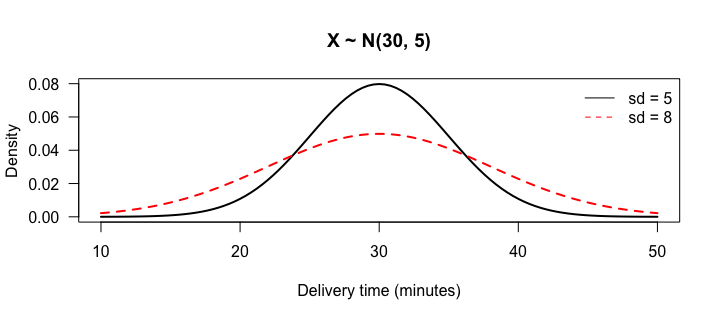
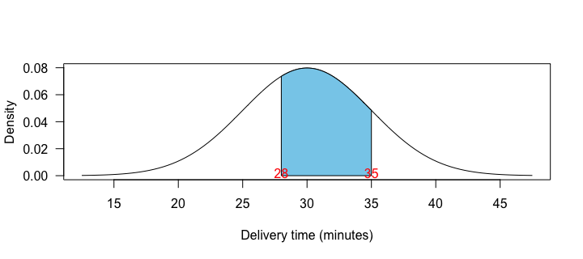
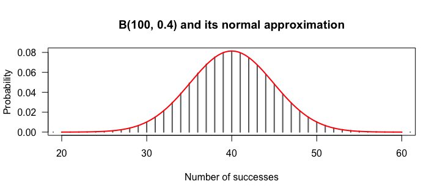

- ①②③ Normal Distributions
- ④ Modeling Binomial & Poisson with Normal Curves
正規分布の性質
正規分布（ガウス分布）は、連続・単峰・左右対称の釣鐘型で、平均＝中央値＝最頻値です。身長、測定誤差、試験の得点などが近い形になります。信頼区間や多くの検定も、正規分布（に近い標本分布）を前提にしています。
形を決めるのは平均 μ と標準偏差 σ の2つで、X ~ N(μ, σ) と書きます（分散 σ² で書く本もあるので注意）。
curve(dnorm(x, mean = 30, sd = 5), from = 10, to = 50, lwd = 2, las = 1, xlab = "Delivery time (minutes)", ylab = "Density", main = "X ~ N(30, 5)") curve(dnorm(x, mean = 30, sd = 8), add = TRUE, lwd = 2, lty = 2, col = "red") legend("topright", c("sd = 5", "sd = 8"), lty = c(1, 2), col = c("black", "red"), bty = "n")

標準偏差が大きいほど、低く横に広い曲線になります。曲線の下の面積は常に 1（100%）です。
pnorm() で確率を求める
ある料理宅配の配達時間は、平均 30 分・標準偏差 5 分の正規分布に従うとします（架空）。
pnorm(25, mean = 30, sd = 5) # P(X <= 25) pnorm(40, mean = 30, sd = 5, lower.tail = FALSE) # P(X >= 40) pnorm(35, 30, 5) - pnorm(28, 30, 5) # P(28 <= X <= 35)
| 問い | コード | 答え |
|---|---|---|
| 25分以内 | pnorm(25, 30, 5) | 約 0.159 |
| 40分以上 | pnorm(40, 30, 5, lower.tail = FALSE) | 約 0.023 |
| 28〜35分 | pnorm(35, …) − pnorm(28, …) | 約 0.497 |
「あいだ」は大きい方の累積 − 小さい方の累積です。図で確かめましょう。
mu <- 30; sigma <- 5; lo <- 28; hi <- 35 xs <- seq(lo, hi, length.out = 200) curve(dnorm(x, mu, sigma), from = mu - 3.5 * sigma, to = mu + 3.5 * sigma, las = 1, xlab = "Delivery time (minutes)", ylab = "Density") polygon(c(lo, xs, hi), c(0, dnorm(xs, mu, sigma), 0), col = "skyblue") text(c(lo, hi), 0.002, c(lo, hi), col = "red")

dnorm() はグラフを描くために使い、確率の計算には使いません。（離散分布の二項・ポアソンとは違うので注意！）qnorm() でパーセンタイルを求める
qnorm() は pnorm() の逆で、「下から何% の位置の値は？」に答えます。
qnorm(0.75, mean = 30, sd = 5) # third quartile (75th percentile) qnorm(0.95, mean = 30, sd = 5) # 95% of deliveries are faster than this pnorm(qnorm(0.95, 30, 5), 30, 5) # round trip back to 0.95
第3四分位（Q3）は 75 パーセンタイルなので約 33.4 分。「95% の配達がこの時間内に届く」は約 38.2 分です。お店の「○分以内にお届け」の約束を決めるのに使えます。
ある試験の得点が N(500, 100) に従うとします。（1）650 点以上の割合、（2）上位 10% に入るための最低点、を求めてください。
pnorm(650, mean = 500, sd = 100, lower.tail = FALSE) qnorm(0.90, mean = 500, sd = 100)
（1）約 0.067（6.7%）。（2）上位 10% ＝ 下から 90% なので qnorm(0.90, …) で約 628 点。
正規近似と標準正規分布
離散分布も、条件を満たせば正規分布で近似できます。
| 分布 | 正規近似できる目安 | 近似する正規分布 |
|---|---|---|
| 二項 B(n, p) | 成功数 np と失敗数 n(1 − p) がどちらも 10 以上 | 平均 np、SD √(np(1 − p)) |
| ポアソン(λ) | λ が大きい（目安 10 以上） | 平均 λ、SD √λ |
n <- 100; p <- 0.4 k <- 0:n plot(k, dbinom(k, n, p), type = "h", lwd = 2, las = 1, col = "gray40", xlab = "Number of successes", ylab = "Probability", xlim = c(20, 60), main = "B(100, 0.4) and its normal approximation") curve(dnorm(x, n * p, sqrt(n * p * (1 - p))), add = TRUE, col = "red", lwd = 2)

pbinom(45, 100, 0.4) # exact pnorm(45.5, mean = 40, sd = sqrt(100 * 0.4 * 0.6)) # normal approx. (+0.5 continuity correction)
np = 40、n(1 − p) = 60 で条件を満たし、正確な値（約 0.869）と近似（約 0.870）はほぼ一致します（離散を連続で近似するので 0.5 を足す連続性補正を使っています）。
標準正規分布 N(0, 1)
平均 0・標準偏差 1 の正規分布を標準正規分布といい、z スコアの分布です。pnorm() は mean と sd を省くと標準正規分布になります。
pnorm(1.96) qnorm(0.975)